Hrnetička flat: lighting study
Where should the wall lights go before the electrician drills? The flat is rendered with real light units and compared room by room, at night and by day.
Open the light mixerThe mixer switches and dims the light groups in every view. It is a large page, so give it a moment to load.

Light groups
- 1 Ambient: wall lights, picture lights, TV pucks and shelf up-light, wardrobe-top up-lights, kitchen bar, dining pendant, floor/table lamps, hall bar, niche (dimmed per area: living + kitchen + hall, bedroom, Sara, guest room)
- 2 Ceiling lights: room lamps, spots, mirror border lights, desk lamp; terrace and laundry wall lamps (own switches)
- 3 Day: 15 May, 13:00, clear sky, no lamps, all shutters open
Scenes
- 1: Ambient (100 %)
- 1b: Ambient dimmed to 30 %
- 2: Ambient + ceiling lights
- 3: Day: 15 May, 13:00, no lamps
Day: Zagreb, Stenjevec (k.o. Stenjevec Jug), 05-15 at 13:00, clear sky; sun and sky light from the real direction (plan north points to bearing 25°).
Light levels
Median illuminance in lux on floors and furniture tops, measured in the render. Lamp strengths are assumptions except where a real product was chosen, so read the night numbers as a comparison between scenes.
| Median lux | 1 | 1b | 2 | 3 |
|---|---|---|---|---|
| Living room (all) | 66 | 20 | 115 | 4379 |
| Kitchen worktop N (front edge) | 253 | 76 | 303 | 2392 |
| Dining table | 276 | 83 | 352 | 4951 |
| Sofa area | 39 | 12 | 96 | 5785 |
| Desk (living) | 61 | 18 | 100 | 5164 |
| Bedroom | 77 | 23 | 147 | 3666 |
| Hall entrance part | 54 | 16 | 335 | 356 |
| Corridor to the rooms | 60 | 18 | 333 | 1272 |
| Sara | 64 | 19 | 173 | 6335 |
| Sara desk | 448 | 134 | 610 | 7172 |
| Room 5 | 56 | 17 | 127 | 4094 |
| Room 5 desk | 110 | 33 | 341 | 4224 |
| Laundry | 1 | 0 | 411 | 1821 |
Lux maps of the whole flat · Floor plan (v22)


Room by room
Each sheet shows one camera view in the four scenes. The night pictures share one camera exposure; the day picture has its own.

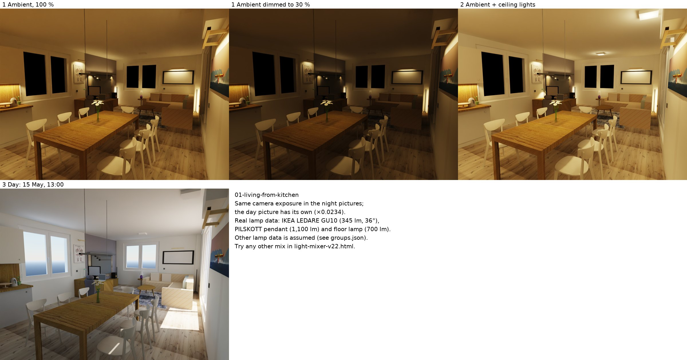

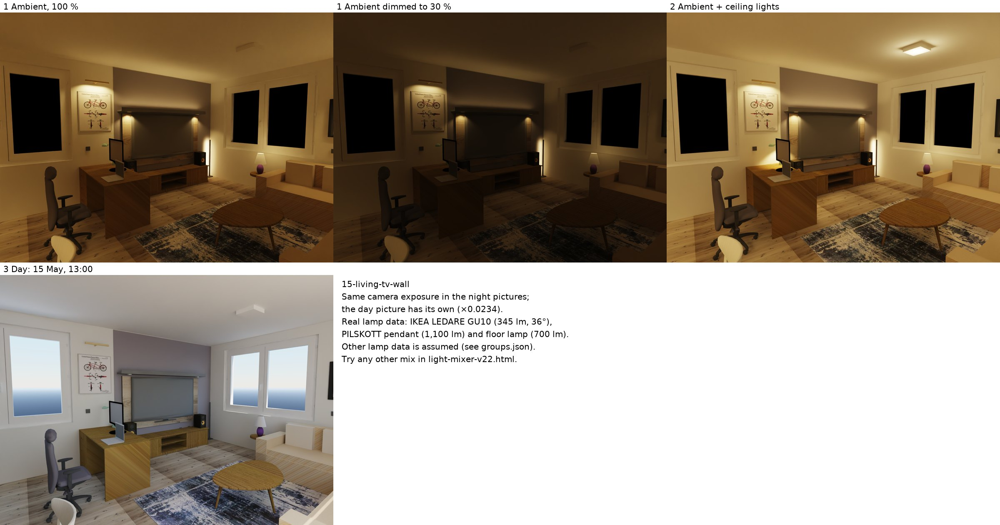

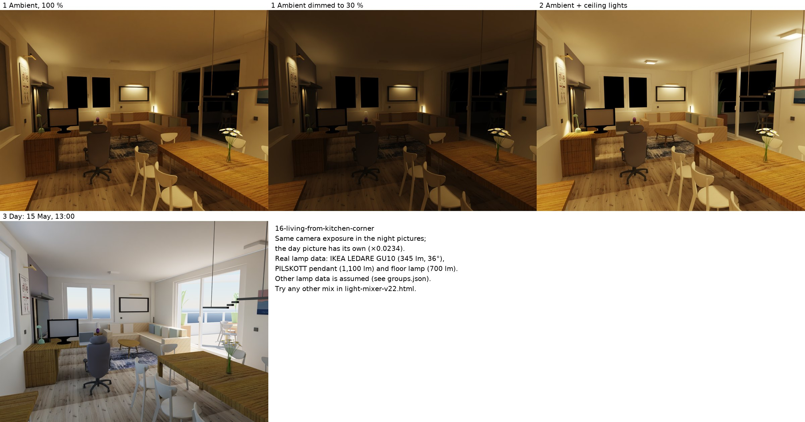

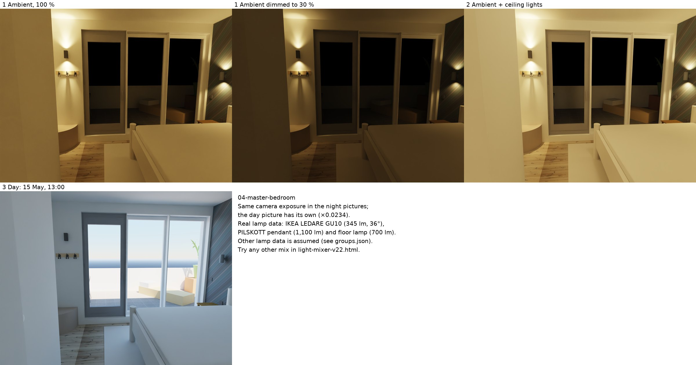

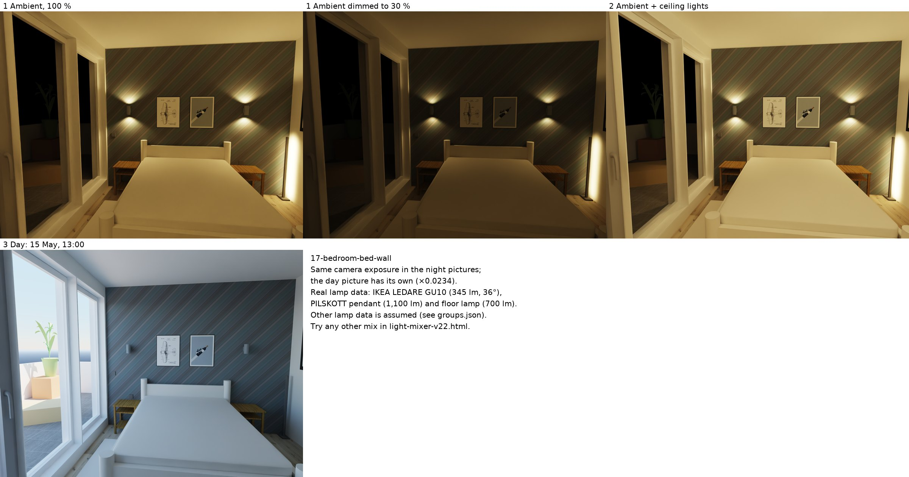

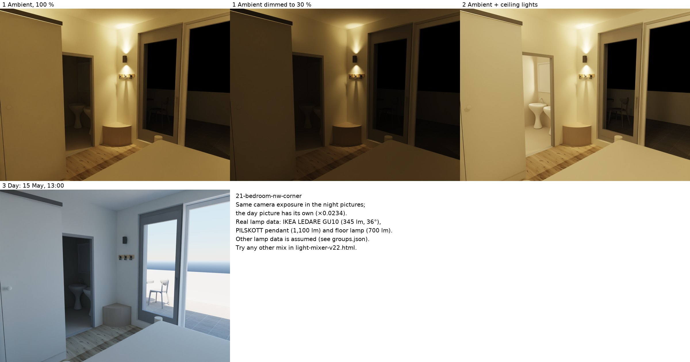

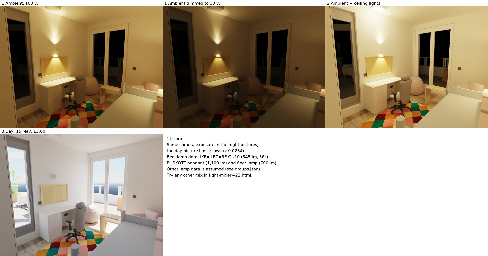

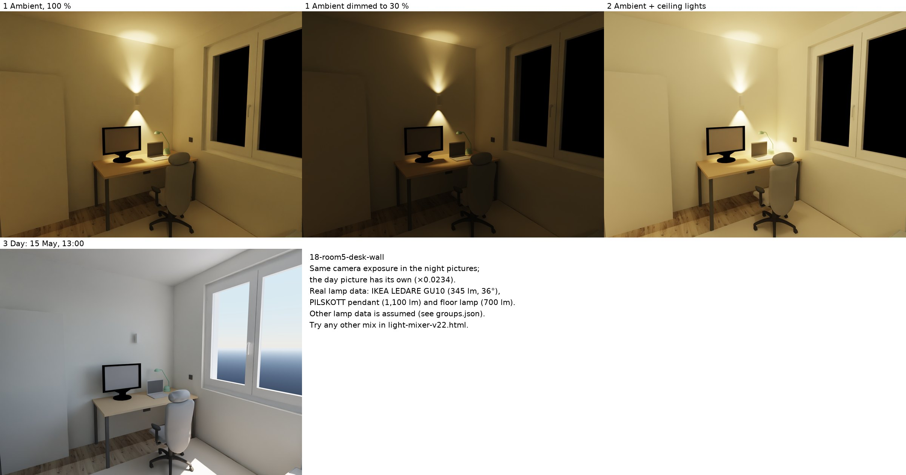

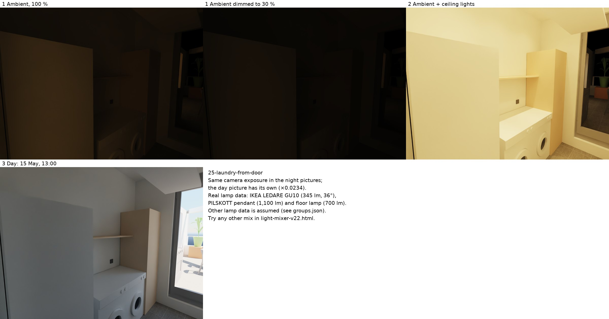

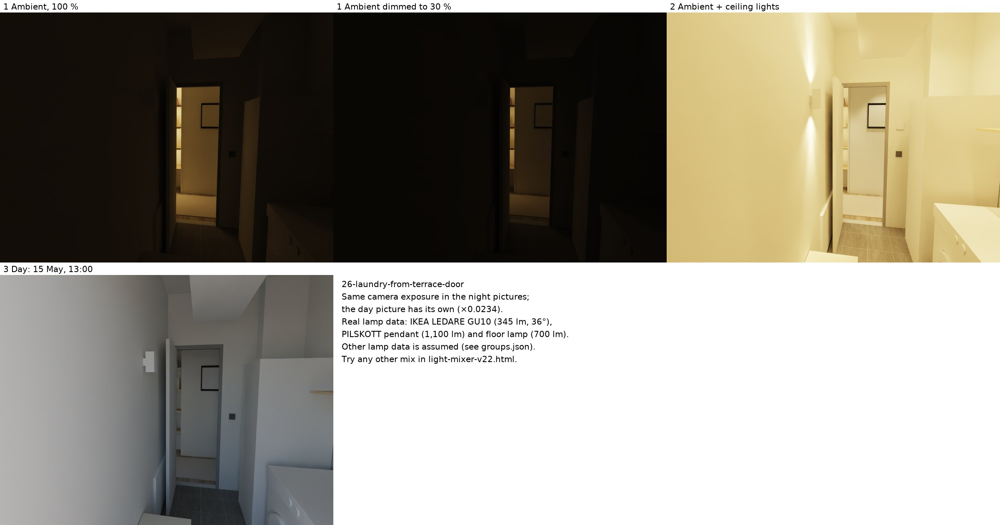

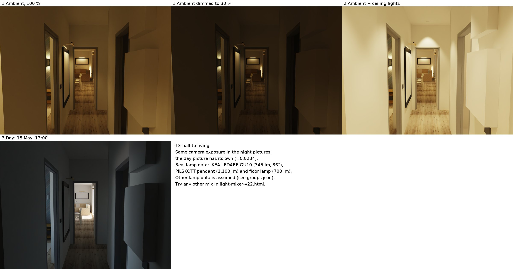

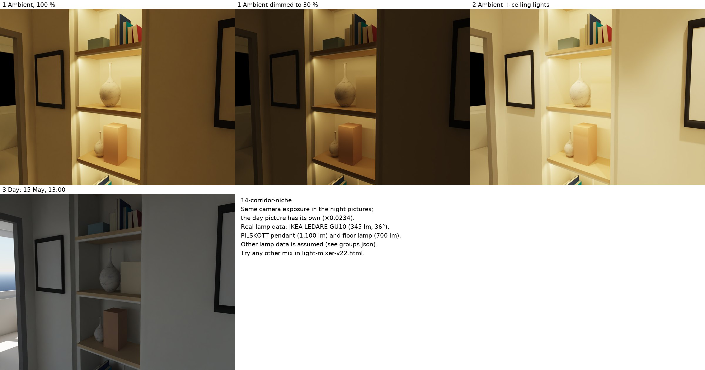

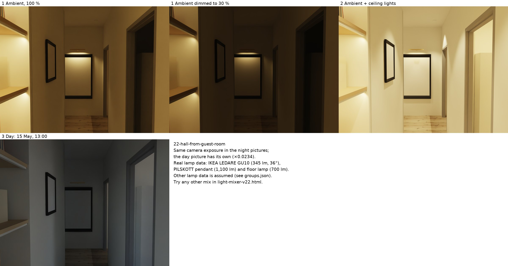

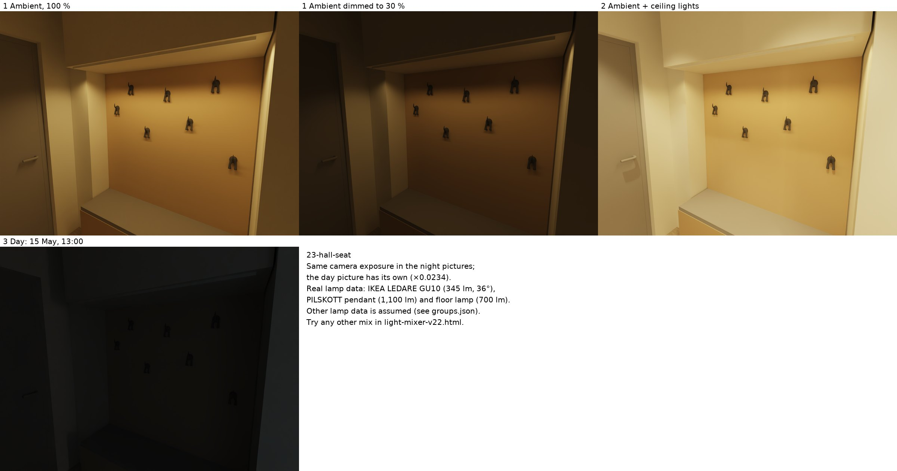

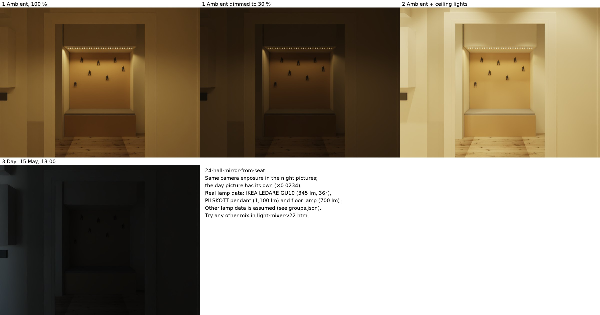
How it is made
The flat is modelled in Sweet Home 3D, which stays the only source of truth. A script exports the model, places every lamp in Blender with its lumens, colour temperature and beam angle, adds the sun and sky for the day scene, and renders each light group with Cycles. Light adds up, so every scene is a sum of these renders. Nothing in Blender is edited by hand.
The scripts, the model and the full work journal are in the GitHub repository.